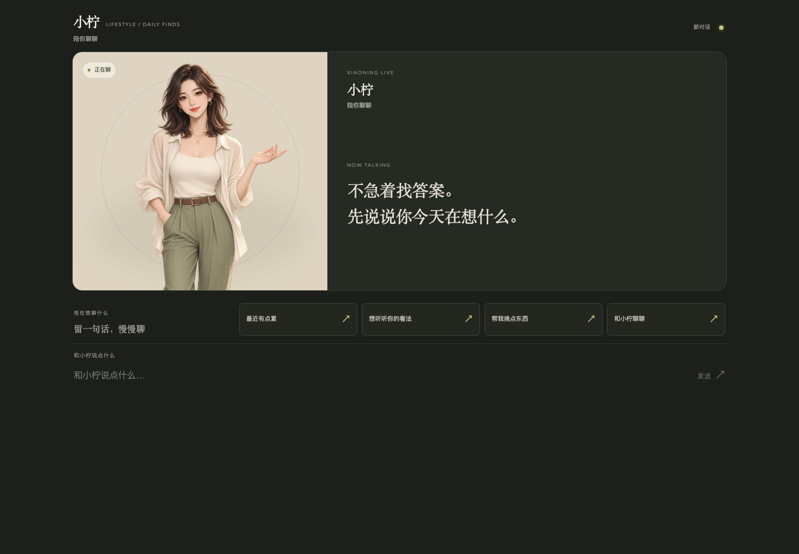
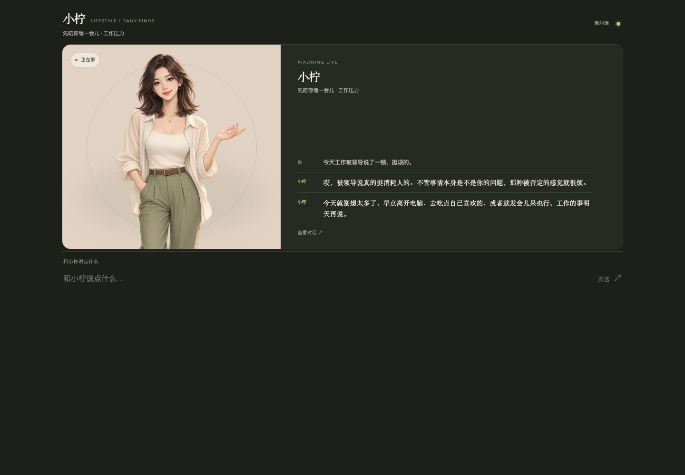
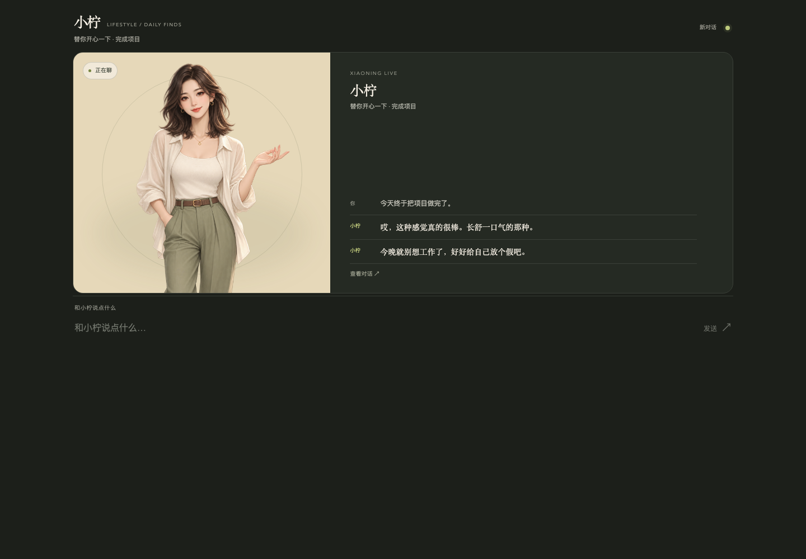
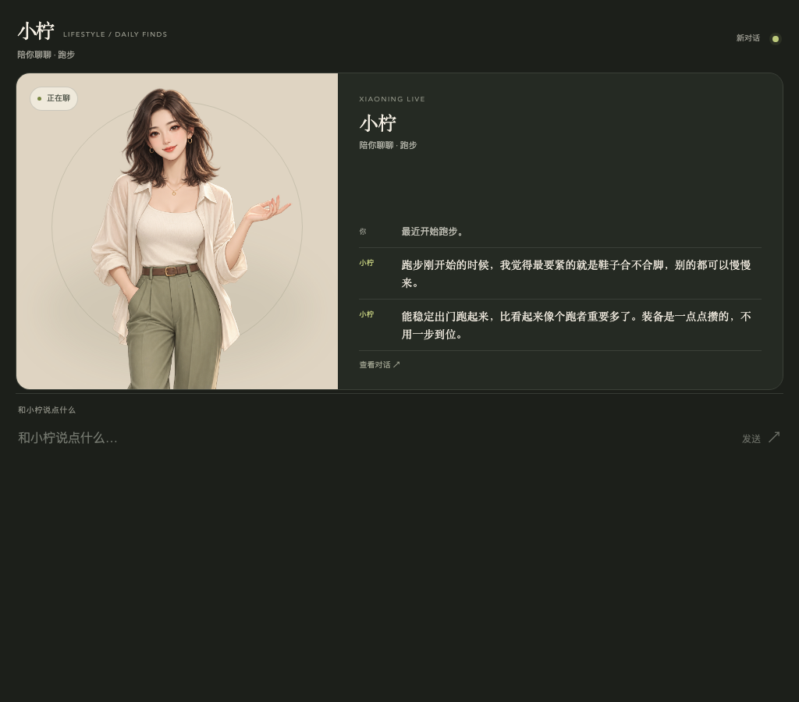
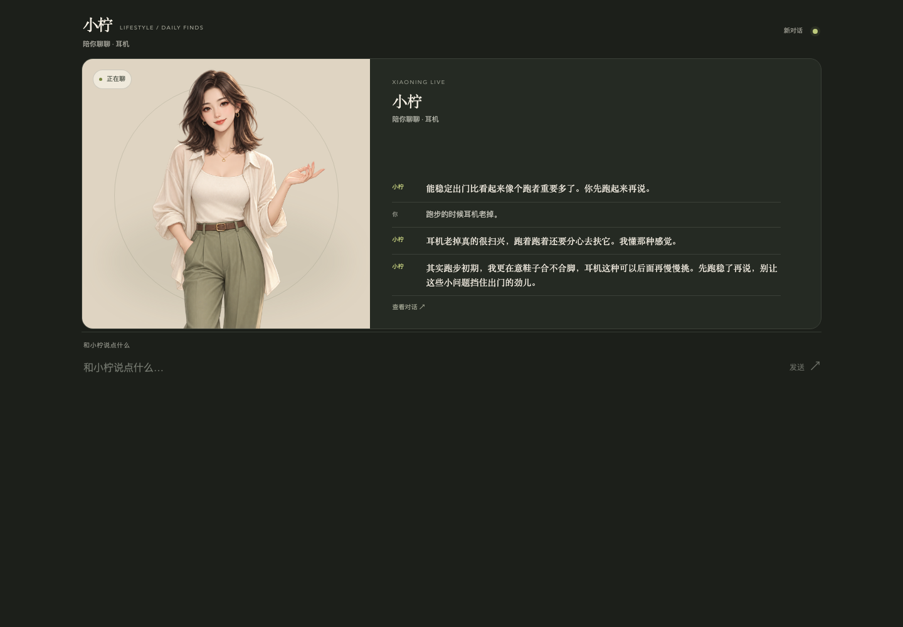
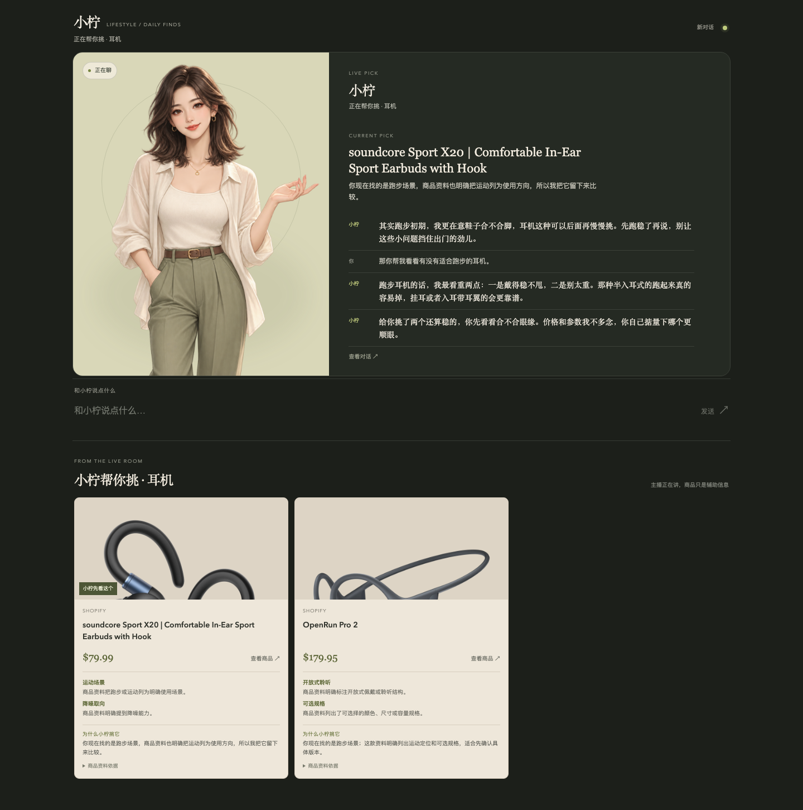
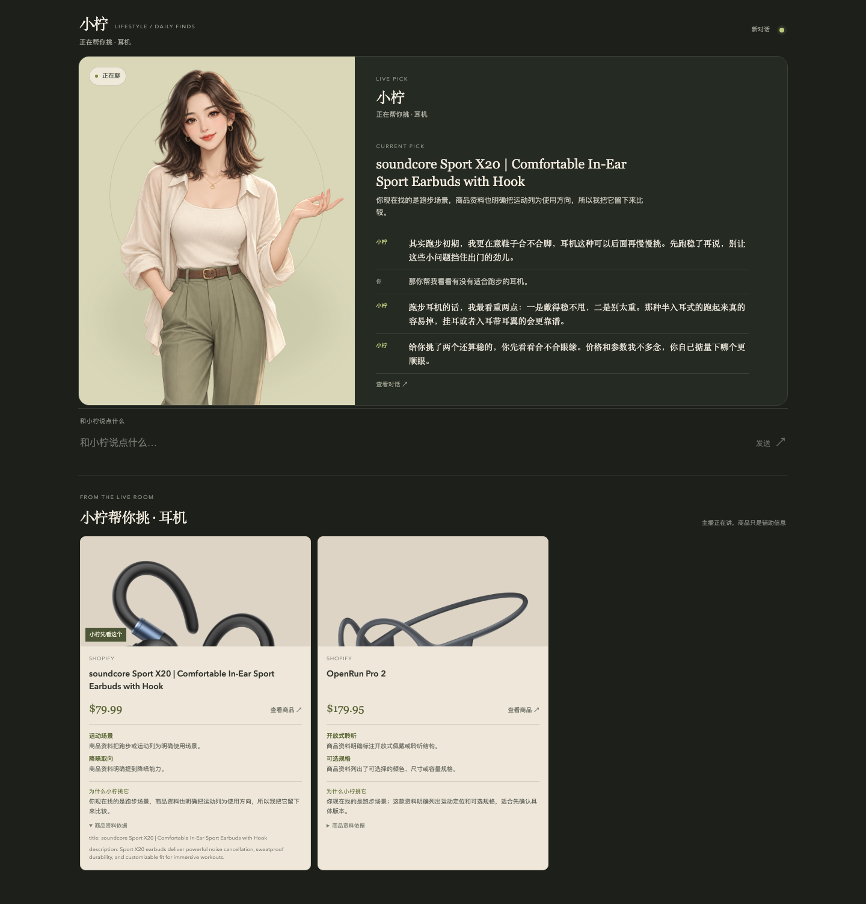
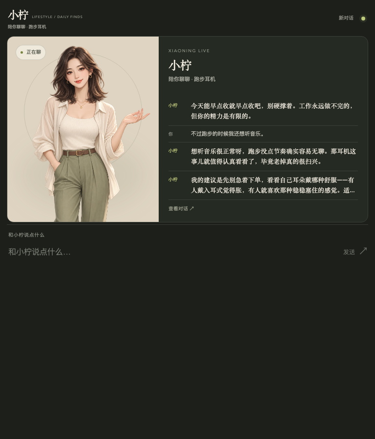
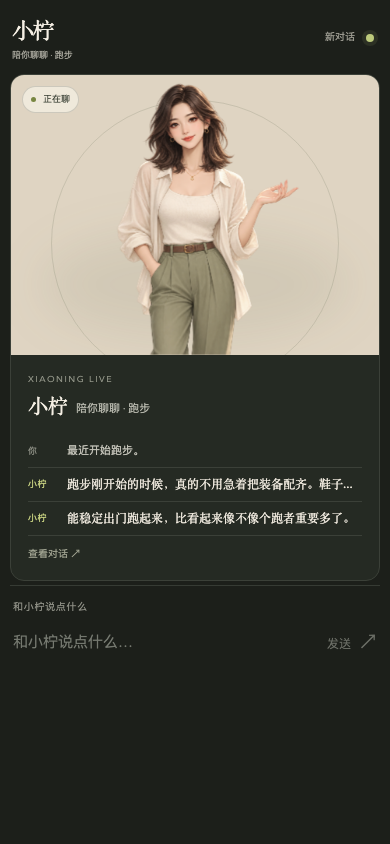

01-home.png · PASS首次进入产品interaction_mode-emotion-currentTopic-commerce called?noprovider-products count0
02-emotional.png · PASS今天工作被领导说了一顿，挺烦的。interaction_modeREACTemotionfrustratedcurrentTopic工作压力commerce called?noprovider-products count0
03-positive.png · PASS今天终于把项目做完了。interaction_modeREACTemotionrelievedcurrentTopic工作项目完成commerce called?noprovider-products count0
04-normal-chat.png · PASS最近开始跑步。interaction_modeSHAREemotionneutralcurrentTopic跑步commerce called?noprovider-products count0
05-pre-commerce.png · PASS最近开始跑步。 → 跑步的时候耳机老掉。interaction_modeSHAREemotionneutralcurrentTopic耳机commerce called?noprovider-products count0
06-curate.png · PASS那你帮我看看有没有适合跑步的耳机。interaction_modeCURATEemotionneutralcurrentTopic耳机commerce called?yesprovidershopifyproducts count2
09-product-detail.png · PASS商品 evidence 展开interaction_modeCURATEemotionneutralcurrentTopic耳机commerce called?yesprovidershopifyproducts count2
07-topic-switch.png · PASS跑步 → 耳机 → iPhone → 工作 → 再回跑步interaction_modeSHAREemotionneutralcurrentTopic跑步耳机commerce called?noprovider-products count0
08-mobile.png · PASS390px normal conversationinteraction_modeSHAREemotionneutralcurrentTopic跑步commerce called?noprovider-products count0